This section of the documentation describes the annotation interface and all available options that you can use to annotate image data accurately and quickly.
The interface includes the following areas:
This is the multi-page printable view of this section. Click here to print.
This section of the documentation describes the annotation interface and all available options that you can use to annotate image data accurately and quickly.
The interface includes the following areas:
The navigation panel and drop-down Menu, allow you to switch between frames, change the annotation mode, save your work, and more.
See:
Use the Menu options to upload and download annotations, change the status of the job, and access other features listed in the table below:
| Panel Item | Description |
|---|---|
| Upload annotations | Upload annotations into a task. |
| Export as a dataset | Download a dataset in one of the supported formats. |
| Remove annotations | Delete all annotations for the current job. Use Select range to remove annotations for a specific range of frames. Enable the Delete only keyframe for tracks checkbox to delete only keyframes from the tracks within the selected range. |
| Run actions | Run annotation actions on the annotated dataset. Annotations action is a feature that allows you to modify a bulk of annotations on many frames. It supports only shape objects. |
| Open the task | Opens a page with details about the task. |
| Change job state | Changes the state of the job:
|
| Finish the job | Saves annotations and sets job state to Completed. |
Use the navigation bar to save annotation results, switch between frames, and access other features listed in the tables below.
Use the following buttons, to save your work, undo changes, and move tasks to done.
| Function | Description |
|---|---|
| Save work 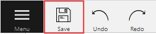 |
Saves annotations for the current job. The button indicates the saving process. |
| Undo/Redo 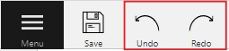 |
Use buttons to undo actions or redo them. |
| Done 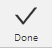 |
Used to complete the creation of the object. This button appears only when the object is being created. |
Block |
Used to pause automatic line creation when drawing a polygon with OpenCV Intelligent scissors. Also used to postpone server requests when creating an object using AI Tools. |
Overview of how to navigate through frames within the interface, with detailed descriptions provided in the table below.

| Function | Description |
|---|---|
| Go to the first/last frame 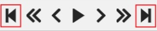 |
Navigate to the first or the last frame of the sequence. |
Go back with a step/Go next with a step |
Move to the previous or next frame by a predefined step. Shortcuts: Default step size is 10 frames. To modify this, navigate to Nickname > Settings > Player Step. |
| Go back/Go next |
Navigate to the neighboring frames. Shortcuts: Go back/Go next buttons are customizable: To customize, right-click on the button and select one of three options (left to right):
|
| Play/Pause 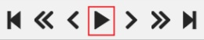 |
Switch between playing and pausing the sequence of frames or set of images. Shortcut: Space. To adjust the playback speed, go to Nickname > Settings > Player Speed. |
Go to the specific frame |
Enter the number of the frame you want to go to and press Enter. |
| Delete frame |
Click to delete current frame. |
This section outlines various functionalities, including how to switch to the fullscreen player mode, access job information, and use the Workspace Switcher to toggle between different annotation and QA modes.
| Function | Description |
|---|---|
Fullscreen |
The fullscreen player mode. The keyboard shortcut is F11. |
| Info |
Open the job info. Overview:
Annotations Statistics table displays the number of created shapes, categorized by labels (e.g., vehicle, person) and the type of annotation (shape, track), as well as the count of manual and interpolated frames. |
| Filters |
Switches on Filters. |
| Workplace Switcher | The drop-down list to swithc between different annotation modes: Overview:
|
Navigation block - contains tools for moving and rotating images.
| Icon | Description |
|---|---|
Cursor (Esc)- a basic annotation pedacting tool. |
|
 |
Move the image- a tool for moving around the image withoutthe possibility of editing. |
 |
Rotate- two buttons to rotate the current framea clockwise ( Ctrl+R) and anticlockwise (Ctrl+Shift+R).You can enable Rotate all images in the settings to rotate all the images in the job |
Zoom block - contains tools for image zoom.
| Icon | Description |
|---|---|
 |
Fit image- fits image into the workspace size.Shortcut - double click on an image |
 |
Select a region of interest- zooms in on a selected region.You can use this tool to quickly zoom in on a specific part of the frame. |
Shapes block - contains all the tools for creating shapes.
| Icon | Description | Links to section |
|---|---|---|
 |
AI Tools |
AI Tools |
 |
OpenCV |
OpenCV |
 |
Rectangle |
Shape mode; Track mode; Drawing by 4 points |
 |
Polygon |
Annotation with polygons; Track mode with polygons |
 |
Polyline |
Annotation with polylines |
 |
Points |
Annotation with points |
| 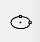 | Ellipses |
Annotation with ellipses |
 |
Cuboid |
Annotation with cuboids |
Brushing tools |
Annotation with brushing | |
Tag |
Annotation with tags | |
| 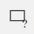 | Open an issue |
Review (available only in review mode) |
Edit block - contains tools for editing tracks and shapes.
| Icon | Description | Links to section |
|---|---|---|
 |
Merge Shapes(M) - starts/stops the merging shapes mode. |
Track mode (basics) |
Group Shapes (G) - starts/stops the grouping shapes mode. |
Shape grouping | |
 |
Split - splits a track. |
Track mode (advanced) |
|
Split - splits a track. |
Track mode (advanced) |
| Joins multiple labels into one | Joining mask tool | |
| Slices one label into several. | Slice mask/polygon |
Switching between user interface modes.
Use arrows below to move to the next/previous frame. Use the scroll bar slider to scroll through frames. Almost every button has a shortcut. To get a hint about a shortcut, just move your mouse pointer over an UI element.
To navigate the image, use the button on the controls sidebar.
Another way an image can be moved/shifted is by holding the left mouse button inside
an area without annotated objects.
If the Mouse Wheel is pressed, then all annotated objects are ignored. Otherwise the
a highlighted bounding box will be moved instead of the image itself.
You can use the button on the sidebar controls to zoom on a region of interest.
Use the button Fit the image to fit the image in the workspace.
You can also use the mouse wheel to scale the image
(the image will be zoomed relatively to your current cursor position).
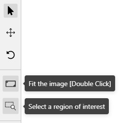
In the objects sidebar, you can see the list of available objects on the current frame. The following figure is an example of how the list might look like:
| Shape mode | Track mode |
|---|---|
 |
 |
Filter input box
The way how to use filters is described in the advanced guide here.
List of objects

Objects on the sidebar
The type of shape can be changed by selecting the Label property. For instance, it can look like shown in the figure below:
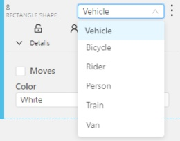
Object action menu
The action menu calls up the button:

The action menu contains:
Create object URL - puts a link to an object on the clipboard. After you open the link, this object will be filtered.
Make a copy - copies an object. The keyboard shortcut is Ctrl + C > Ctrl + V.
Propagate function copies the form to multiple frames
and displays a dialog box where you can specify the number
of copies or the frame to which you want to copy the object.
The keyboard shortcut is Ctrl + B. On how to propagate
only filtered shapes, see Shapes converter
There are two options available:
N subsequent frames at the same position. ) creates
a copy of the object on
) creates
a copy of the object on N previous frames at the same position.To background - moves the object to the background. The keyboard shortcut - or _
To foreground - moves the object to the foreground. The keyboard shortcut + or =
Change instance color- choosing a color using the color picker (available only in instance mode).

Remove - removes the object. The keyboard shortcut Del, Shift+Del.
A shape can be locked to prevent its modification or moving by an accident. Shortcut to lock an object: L.

A shape can be Occluded. Shortcut: Q. Such shapes have dashed boundaries.


You can change the way an object is displayed on a frame (show or hide).

Switch pinned property - when enabled, a shape cannot be moved by dragging or dropping.
**Tracker switcher **- enable/disable tracking for the object.

By clicking on the Details button you can collapse or expand the field with all the attributes of the object.

In this tab, you can lock or hide objects of a certain label. To change the color for a specific label, you need to go to the task page and select the color by clicking the edit button, this way you will change the label color for all jobs in the task.
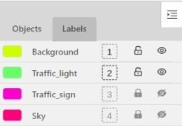
Fast label change
You can change the label of an object using hotkeys. In order to do it, you need to assign a number (from 0 to 9) to labels. By default numbers 1,2…0 are assigned to the first ten labels. To assign a number, click on the button placed at the right of a label name on the sidebar.

After that, you will be able to assign a corresponding label to an object by hovering your mouse cursor over it and pressing Ctrl + Num(0..9).
In case you do not point the cursor to the object, pressing Ctrl + Num(0..9) will set a chosen label as default,
so that the next object you create (use the N key) will automatically have this label assigned.

Color By options
Change the color scheme of the annotation:
Instance — every shape has a random color

Group — every group of shape has its own random color, ungrouped shapes are white

Label — every label (e.g. car, person) has its own random color

You can change any random color pointing to a needed box on a frame or on an object sidebar.
Fill Opacity slider
Change the opacity of every shape in the annotation.

Selected Fill Opacity slider
Change the opacity of the selected object’s fill. It is possible to change the opacity while drawing an object in the case of rectangles, polygons, and cuboids.

Outlines borders checkbox
You can change a special shape border color by clicking on the Eyedropper icon.

Show bitmap checkbox
If enabled all shapes are displayed in white and the background is black.

Show projections checkbox
Enables/disables the display of auxiliary perspective lines. Only relevant for cuboids

Hide - the button hides the object’s sidebar.
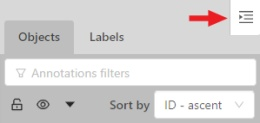
In CVAT the Workspace serves as a work area where annotators interact with images, videos, and the various tools available to create high-quality annotations.
See:
The Image settings panel serves as a versatile tool for fine-tuning the visual aspects of your image. Whether you need to brighten the image, increase contrast, or make other adjustments, this panel is your go-to.
Additionally, the panel allows you to overlay a grid on the image for more precise annotation.
Note: Adjusting the image settings only alters how the pictures are displayed. The images themselves will remain unmodified and unchanged.
By default, the Image settings panel is not visible. To access it, click on the Arrow Up (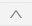) icon located at the bottom of the workspace.

To add the grid to the image, do the following:
To change the color setting of the image is CVAT, do the following:
There are four color quality settings in CVAT:
Brightness increases and decreases the overall lightness of the image:
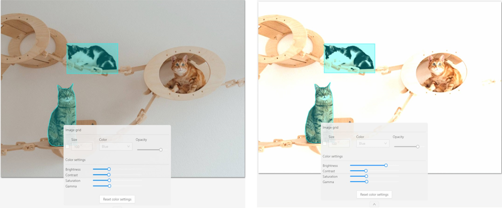
Contrast is the range of brightness, from lightest to darkest, in an image.

Saturation describes the intensity of the color.
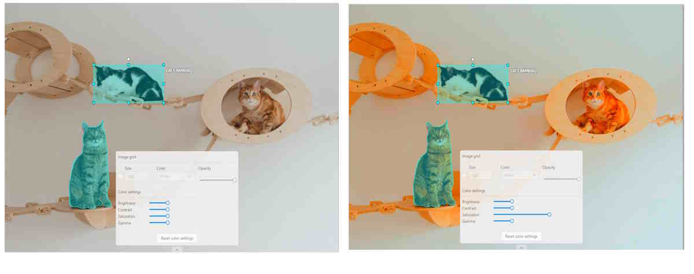
Gamma correction can be used to control the overall brightness of an image
To reset the setting to default values, click Reset color settings
Z-axis Slider enables you to add annotation layers while hiding the layers positioned beyond.
You can also move between layers by moving the slider to the layer you need.
The slider becomes active when multiple Z-layers are present within a frame. Click + on the slider to add a new layer; upon pressing it, a new layer is automatically created and activated.
You can also relocate objects between layers using the + and - keys.
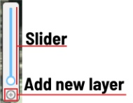
The workspace is also equipped with the following features:
Right-clicking an object opens the Object Card. This interface contains essential controls for modifying the object’s label and attributes, as well as providing access to an action menu.

Right-clicking on a polygon point will open a menu, from which you can Delete point or Set start point.